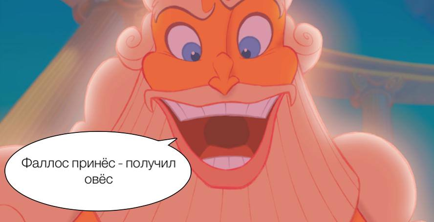
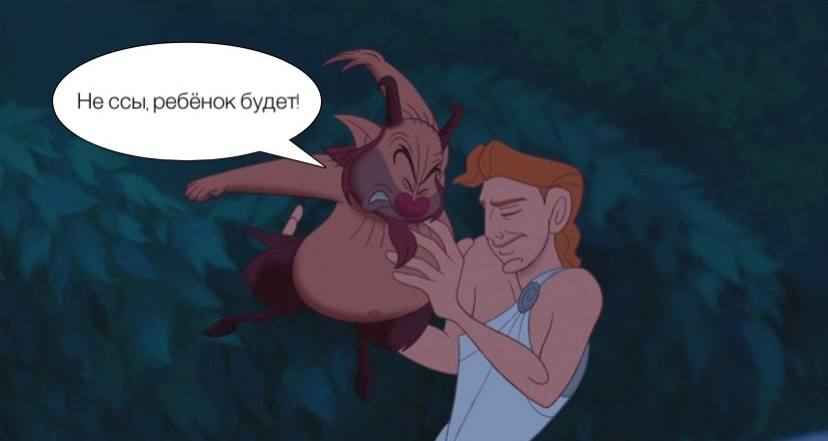

Мат через обряд
Обсценную или табуированную лексику принято воспринимать как отталкивающую и вульгарную. Но если обратиться к этимологии нецензурных выражений, окажется, что большинство из них имеют прямое отношение к религии. Используя разговорный мат, мы вольно или невольно обращаемся к древним богам.
Связь религии и разговорного мата прослеживается в именах Древних Богов и Богинь различных религий. Во времена языческих верований, люди поклонялись идолам, связывая их с явлениями и действиями своей человеческой жизни. К примеру, древние греки напрямую отождествляли фаллос с богиней плодородия Деметрой. На празднествах, в честь бога-покровителя искусства и театра Диониса, людской хор нёс большую фигуру в виде мужского полового органа, тем самым помогая природе “забеременеть”. Этот обычай помогал, как веровали греки, получать богатый урожай с наступлением весны.

Ещё одна традиция, или ещё одно доказательство почитания человеческих гениталий среди древних греков — их изображение на входе в дом. “Символ плодородия”, как считали греки, должен был привлекать удачу.
Имена множества Богов и Богинь напрямую связаны с названиями половых органов. Если обратиться к славянской мифологии и религиозным рукописям, можно заметить упоминания Богини плодородия с необычным именем Макошь (Мокошь). Перевод с балтийского языка, который впоследствии перекочевал в русский язык, схож с формой имени этой богини. Так, например, женский половой орган напрямую связан с Макошь не только этимологически, но и функционально. Сама богиня связана с Матерью сырой земли, а ее главным атрибутом, по некоторым источникам, является влага. Предположительно, суть явления заключается во вложении семени мужским началом в сырую, то есть влажную землю, для дальнейшего прорастания, а значит, продолжения рода.

Итак, в основе многообразия бранных слов лежит так называемая триада, которая означает женские и мужские гениталии, а также половой акт. И это неспроста. Функции деторождения придавалось высокое значение, поэтому слова для обозначения органов и самого процесса зачатия были частью множества различных ритуалов. По одной из версий, мат восходит к славянским заговорам: его произносили в трудную минуту, обращаясь за помощью к магической силе, которая содержится в половых органах. По другой версии, брань выражала проклятия и использовалась колдунами.
С отходом от язычества, многие святыни были уничтожены, а традиции рассеяны в песках времени. Но, хоть обычаи и стерлись из памяти людей, множество слов и выражений перекочевали в современную лексику народов. Важно отметить, что те слова, которые считаются ругательствами сегодня, не воспринимались как брань в те времена.
Ругается ли человек матом, если для обозначения мужского члена он употребляет слово хуй, так как не знает другого, например, пенис? Думаю, нет… Важным этапом в оформлении статуса группы матерных слов является период становления так называемой “карнавальной” культуры, то есть культуры вторичной, отражающей в пародийной форме культуру официальную… Наличие двух значений у слова хуй “мужской член” и “тот, у кого есть член” часто приводит к символизации этого понятия. Возможно, что здесь мы имеем дело с реликтами древнего фаллического культа, например, в прошлом веке часто посылали не на хуй, а к хую, к херу, различие здесь принципиальное — в первом случае актуализируется сема места, направления, цели движения (куда?), а во втором —субъект, к которому направлено движение (к кому?), —отрывок из книги “Русский мат” Ильясова Фархада Назиповича — кандидата философских наук.
Только в XVIII веке нынешний мат стал считаться “нецензурной лексикой”. Как мы уже узнали, до этого подобные слова обозначали или физиологические особенности (или части) человеческого тела, или служили частью священных обрядов. Например, слово, которым сейчас называют проституток, по своему происхождению относится к высокому славянизму. До XV века оно имело значение “лжец, обманщик”.
Ругательство, обозначающее член, соответствует слову “хер”, что в древнерусском языке означало “крест”.
>Уход от античности, искоренение язычества и разделение лексики на виды и жанры способствовало изменению не только трактата слов, но и их восприятия в различных слоях общества. Множество выражений, носящие исключительно ритуальное предназначение в нынешний век, попали под запрет и стали частью “ненормативной лексики” (брань, вульгаризм, мат и т.д.)
В современном мире отношение к табуированной лексике неоднозначно. Если раньше она являлась частью религиозных обрядов в различных странах и верованиях, то сегодня же мировые религии ведут жесткую борьбу со “сквернословием”. Но каким бы отношением не определялось нынешними поколениями к обсценной лексики, она по-прежнему остается частью зарождения и формирования многих религиозных начал. А также способствует развитию и пониманию культуры, как средства выражения мыслей и чувств.
Автор: Диана Селиверстова